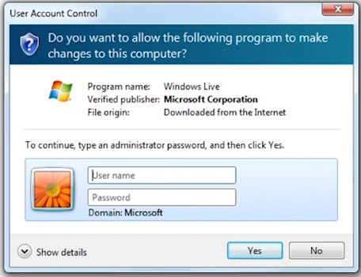

NetSec Lecture Notes - Lesson 10 - Advanced Malware Analysis
Advanced Malware Analysis
Malware Prevalence
- “Safe” websites not safe to visit
- Reading USAToday.com may result in malware on your computer
- How?
- USAToday’s network may be compromised
- Malicious scripts may be bundled with ads or content, and may redirect the user’s browser to download malicious software
- Case study: Alexa top sites
- Ranked list of all domains - 252 milliion
- Top 25k of these were examined each day, systematically
- Network traffic was monitored for drive-by download
- 39 of these domains resulted in drive-by downloads
- 87% of these sites involved exploits for Java
- 46% of sites served exploits via ad networks
- 7.8 million users were served malicious content
- 1.2 million likely compromised
- New features are a regular basis for attacks
- PDF contains embedded, malicious Flash movie which exploits Acrobat Reader’s flash interpreter, thus compromising the system. This can then phone home to controller
- Phone home traffic can be observed
- Soon after, compromised, legitimate websites found hosting drive-by attacks that use the same flaw to exploit Flash player
- Vulnerability traded back to bug reported to Adobe eight months prior
- PDF contains embedded, malicious Flash movie which exploits Acrobat Reader’s flash interpreter, thus compromising the system. This can then phone home to controller
- Users remain uninformed (vulnerable)
- Example: Waledac’s email campaigns
- Use of geo-location, temporally relevant events (e.g. bomb blast in <your city>, July 4th fireworks videos) to make attacks more compelling
Malware Evolution
- Traditional defense-in-depth
- Network-level protection
- Firewall
- evaded by C&C protocol congruency
- IPS/IDS
- Evaded by custom encodings
- Firewall
- Host-level protection
- User Access Control
- analagous to “informed consent”
- users usually don’t really get it, just click “yes” to get on with their job
- 
- analagous to “informed consent”
- User Access Control
- Antivirus
- Uses complex, heuristics-based detection along with signature matching
Malware Obfuscation
Malware Obfuscation Quiz
- Code that reverses the pre-runtime transformation is included in the executable
- True
- Each instance looks different, but there is a signature or pattern across all instances
- False
- A signature scanner that tries to identify malware by its unique strings would not be effective
- True
Packing
- Definition of Packing: A technique whereby parts or all of an executable file are compressed, encrypted, or transformed in some fashion
- Transformed code looks random, because it is encrypted with a randomly generated key.
- This happens each time the packing tool is invoked, so even different copies of the same malware look different
- Transformed machine code looks like data, so network IDS looking for executables will miss it
- Server Side Polymorphism
- Attacks the heart of the traditional host-based AV model by automating mutations
- Eventually researches can deobfuscate any malware and discover its behaviors, but it can be a substantial obstacle and takes time
- Attackers can thwart this by sending updates to compromised computers with newly obfuscated malware, with new behaviors. This effectively resets the research to square one each time
- Example: Waledac
- Collected on 12/30/2008
- By 2/25/2009 90% of AV can detect it
- New sample, collected on 2/5/2009
- Only about 28% of AV can detect this new version
- Collected on 12/30/2008
- Impact on Antivirus Software
- Researchers surveyed McAfee AV using 200,000 malware samples collected over 6 months
- 53% detected on first day
- 32% detected with delay (avg delay was 54 days)
- 15% still not detected 6 months later
- Researchers surveyed McAfee AV using 200,000 malware samples collected over 6 months
Obfuscation Quiz 2
Given the following obfuscation techniques, who is the software hiding from?
- Rootkits
- Users
- Thoroughly mapping security sites and honey pots so as to avoid them
- Security
- Using nonce-based encryption methods
- Researchers
Malware Analysis
- Understanding malware behaviors
- Network and host level detection/blocking
- Forensics and asset remedation
- Threat/trend analysis
- Malware authors make analysis very challenging
- Increasingly sophisticated techniques
- A core challenge is that the sheer volume of malware samples is difficult to keep up with, due to automation
- DIY kits, packing tools, server-side polymorphism vastly increase the volume of samples
- There are hundreds of thousands of new instances each day
- Collected from crawlers, mail filters, honeypots, user submissions, and malware exchanges
- Given that the enemy is automated, analysis must be as well
- The malware uncertainty principle
- Observer affecting the observed environment
- Malware may alter its behavior if observation is detected
- Robust and detailed analyzers are typically invasive
- In-memory presence
- Hooks
- CPU Emulation
- Malware may refuse to run entirely
- This is already commercialized
- Dynamic analyzer detection is a standard malware feature
- We need malware analysis to be transparent to the malware. Malware must not be able to detect that it is being analyzed
- Higher privilege for analysis tool than the malware has
- Must have no non-privileged side effects that might be detected
- Malware should get the same instruction execution semantics, exception handling, and notion of time as it would if the analyzer were not present
- Most existing tools fall short of the above transparency reqquirements
- In-guest tools (runs on same machine with same privilege as malware)
- No higher privilege
- Non-privileged side effects
- Exception handling issues
- Reduced Privilege Guests (VMWare, etc)
- Non-privileged side effects
- Emulation (QEMU, Simics)
- No identical instruction execution semantics
- These are the most widely used by state of the art analyzers but they have major shortcomings
- There have been attacks that detect full system emulator approaches by exploiting incomplete emulation
- There is no way to guarantee the absence of such attacks
- Determining whether the languages of two Turing machines (L and L’) are equal is known as the undecidable problem EQTM
- In-guest tools (runs on same machine with same privilege as malware)
- Example of same instruction semantics attack
0xf30xf3...0x90- 15
0xf3s before0x90: execute no-op 15 times - But the instruction (16 bytes) is illegal because max x86 instruction length is 15 bytes
- In bare metal, “illegal instruction” excetpion
- Emulator will happily execute this
- 15
- Most challenging transparency requirement is the “identical notion of time”
- Network-based timing measurements
- e.g. Analyzer causes delay in requests, or the website the malware tries to connect to is not the real one
- Impossible to identify all
- Equivalent to the problem of detecting and removing all covert channels
- This is proved to be an undecidable problem
- Network-based timing measurements
Analysis Difficulty Quiz
Rank the four categories from easiest (1) to hardest (4)
- Static Properties Analysis: examine the static properties of the malware. Static properties include: metadata, strings embeddedi n the malware, header details, etc
- 2
- Manual Code Reversing: use a disassembler and decompiler to recreate the malware code
- 4
- Fully Automated Analysis: use fully automated tools to analyze the malware
- 1
- Interactive Behavior Analysis: running the mlaware in a protected and isolated environment
- 3
Analysis Technique Results Quiz
Rank the four categories from the most information is obtained (1) to least information is obtained (4)
- Static Properties Analysis: examine the static properties of the malware. Static properties include: metadata, strings embeddedi n the malware, header details, etc
- 3
- Manual Code Reversing: use a disassembler and decompiler to recreate the malware code *1
- Fully Automated Analysis: use fully automated tools to analyze the malware
- 4
- Interactive Behavior Analysis: running the mlaware in a protected and isolated environment
- 2
Robust and Efficient Malware Analysis
- Robust == transparent. not easily detected or evaded
- Efficient == automated and fast
- Focus on host-based analysis. Run malware on a machine and observe its behaviors and properties
- Malware will try to detect the presence of the analyzer, via differences in analysis environment
- Our goal to achieve identical execution, such that the analyzer cannot be detected
- Formal requirements
- Higher privilege
- Analyzer has to have higher privilege over malware
- No non-privileged side-effects
- Minimal side-effects should be introduced by the analyzer
- Analyzer should enforce privileged access to side-effects
- Identical basic instruction execution semantics
- Hardware semantics and emulation
- Transparent exception handling
- Exception handling should be transparent or same
- Identical measure of time
- Timing for each instruction
- Timing for I/O, exception handling
- Higher privilege
Ether Malware Analyzer
- Built at Georgia Tech! And it’s open-source!
- Higher Privilege
- Built using Intel VT (Hardware Virtualization)
- Hypervisor has higher privilege over kernel
- Several hardware supported traps – VM exits
- No non-privileged side-effects
- Analyzer is outside environment
- Minimal side-effects. Trap flag, system call handling
- Identical basic instruction execution semantics
- Uses hardware virtualization
- Instruction execution semantics are the same
- Transparent exception handling
- Hypervisor pre-empts before OS exception handling
- Identical measure of time
- RDTSC (RealDateTimeStampCounter instruction)
- Privileged instruction. Hypervisor can control responses to malware whenever the malware tries to get a measure of time
- Ether has a Hypervisor component in Xen, and also runs in a separate VM.
- Ether provides both a fine-grained instruction-by-instruction examination of the malware, as well as a more coarse-grained systemcall-by-systemcall examination
- EtherUnpack: extracts hidden code from obfuscated malware
- Georgia Tech researchers compared how well current tools extract hidden code by obfuscating a test binary and looking for a known string in the extracted code
- EtherTrace: Records system calls executed by obfuscated malware
- Georgia Tech researchers obfuscated a test binary which executes a set of known operations, and then observe if they were logged by the tool
Analysis vs Obfuscations
- Analysis: Static Analysis based approaches
- Obfuscations: Polymorphism, metamorphism, packing, opaque predicates, anti-disassembly
- Analysis: Dynamic malware analysis (running the malware)
- Obfuscations: Trigger-based behavior (logic bombs, time bombs, anti-debugging, anti-emulation, etc)
- Analysis: Dynamic multipath exploration (Bitscope, EXE, Forced Execution)
- Obfuscation: ??
- Battle continues
- Obfuscation: ??
Malware Emulators
- Recent move towards emulator-based obfuscation
- An instruction-level obfuscation approach
- Several commercial pakcers support emulator based obfuscation, including Code Virtualizer and VMProtect
- Emulation techniques maturing, widespread adoption is possible
Impacts on Existing Malware Analysis
- Unknown language L
- L can be randomly generated
- Pure Static Analysis (whitebox)
- Completely thwarted
- Only emulator code is analyzable
- PL is considered as data by the analyzer
- Greybox methods (dynamic analysis)
- Includes instruction level analyzers, information-flow, dynamic tainting, multi-path exploration, etc
- Analysis is inaccurate
- For example, paths may be explored in the emulator, but not on the malware
- Manual reverse-engineering methods cannot scale
- Manual reverse-engineering takes time
- Each malware instance can have new bytecode language and emulator, making reverse-engineered information obsolete
- Need automated techniques to reverse emulator
- Should not require any knowledge about bytecode
- Should be generic and work for a large class of emulators
- Is automated reverse engineering possible?
- Theoretically, it is an undecidable problem
- However, from intuition, the emulator’s fetch-decode-execute behavior can be identified at runtime
Approaches of Emulation
Challenges of Reverse Engineering
- No knowledge of bytecode program
- The location of the bytecode program in the obfuscated program’s memory is not known
- No knowledge of emulator’s code
- The code that corresponds to decode, dispatch, and execute phases of the emulator is not known
- Intentional variations
- Context can be maintained in many different ways
- An attacker may complicate Virtual Program Counter (VPC) identification by maintaining it in different correlated variables
- Bytecode program may be stored in non-contiguous memory
Approach Overview
- Abstract Variable Binding
- Identify pointer variables within raw memory of emulator using access patterns of memory reads and writes
- It is a combination and forward and backward data-flow analysis
- Identify Candidate VPCs
- Cluster memory reads according to their bound variables
- Each cluster provides a candidate VPC
- Identify Emulator Phases
- Identify decode-dispatch loop and emulator phases
- Extract bytecode Syntax and Semantics
- Identify fetched instruction syntax – opcode and operands
- Identify execute routine related to instruction – this is the semantics of bytecode instruction
- This information is subsequently used to generate control flow graphs (CFGs)
Experimental Evaluation
- Researchers created a synthetic program, used two emulation obfuscators (VMProtect and CodeVirtualizer) and applied an implementation of the above approach
- They then compared the CFG of the original program to the CFG of the deobfuscated results
- Tool is successful in extracting main properties